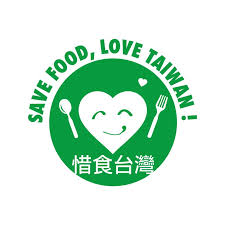

惜食惜食不是苦行，而是一場讓生活更優雅、荷包更豐滿的廚房革命。
我們總以為「減少食物浪費」需要大費周章，甚至得勉強自己吃下不想吃的剩菜。但事實上，惜食是一種聰明的生活風格。
只要在日常的消費與烹調習慣中，微調 10% 的選擇，你就能在不知不覺中省下大筆伙食費，同時成為守護地球的隱形英雄。以下為你整理從採買、儲存到下廚的「三步驟無痛行動指南」：
走進大賣場，面對「買一送一」或「大包裝優惠」時，大腦往往會陷入撿便宜的盲區，卻忘了算進食物過期的「隱形成本」。
許多食物不是我們不想吃，而是「不小心放壞了」。掌握正確的食材管理學，就能大幅延長食材的保鮮壽命。
面對冰箱裡零碎的剩菜、或只剩半截的蘿蔔，你不需要重複吃一模一樣的加熱剩飯。發揮一點想像力，剩食也能華麗轉身。
「我們不需要少數人做到 100% 的完美惜食；我們需要的是百萬個人，都跨出那不完美的 10% 第一步。」